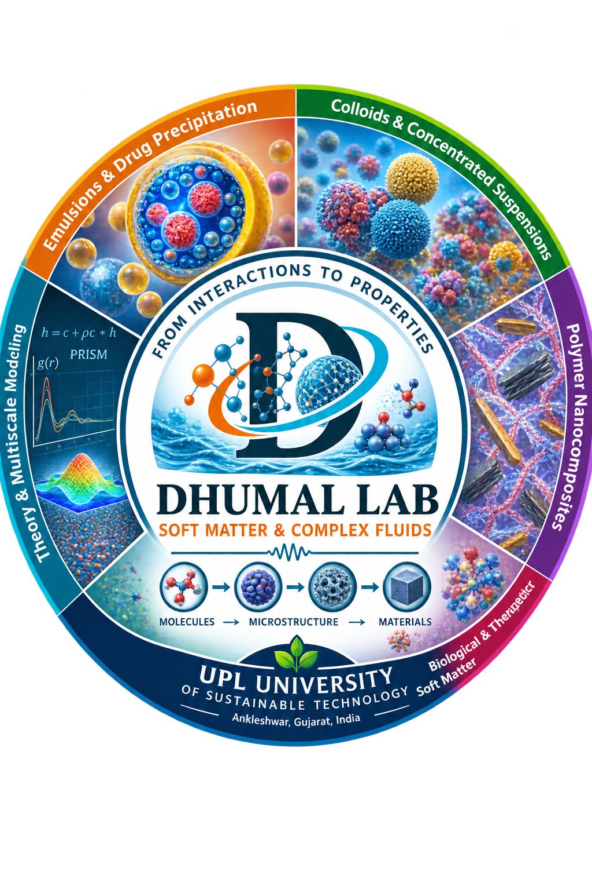

Soft Matter & Complex Fluids
Understanding Soft Matter Across Scales
We investigate how molecular and colloidal interactions give rise to microstructure, dynamics, phase behavior, transport, and macroscopic properties in complex soft materials.
By combining theory, molecular simulation, coarse-grained modeling, and multiscale analysis, we seek predictive connections between microscopic physics and the design of functional materials and formulations.

About the Lab
Connecting Molecular Interactions, Microstructure & Material Behavior
The Dhumal Lab investigates the physical principles governing soft matter and complex fluids, where relatively weak molecular and colloidal interactions can collectively produce rich structures, phase transitions, dynamics, and macroscopic material properties.
We are particularly interested in understanding how molecular interactions, particle geometry, composition, interfaces, confinement, and thermal motion determine the organization of complex fluids across multiple length and time scales.
Our research combines statistical-mechanical theory, coarse-grained modeling, molecular dynamics, Brownian dynamics, multiscale simulation, and detailed microstructural analysis to connect microscopic physics with experimentally observable behavior.
These ideas are applied to systems including colloidal dispersions, concentrated suspensions, polymer nanocomposites, emulsions, pharmaceutical formulations, and biological soft matter.
Learn more about our research →Research Approach
Theory, Simulation & Microstructure
We integrate complementary theoretical and computational approaches to bridge molecular interactions, mesoscopic organization, and macroscopic material response.

Principal Investigator
Dr. Umesh Dhumal
Assistant Professor
Department of Chemical Engineering
SRICT, UPL University of Sustainable Technology
Ankleshwar, Gujarat, India
Research interests span soft matter, complex fluids, colloidal systems, polymer nanocomposites, biological fluids, molecular simulation, and multiscale computational modeling.
Profile & Lab Members →Join the Lab
Interested in Soft Matter Research?
We welcome motivated undergraduate and postgraduate students interested in computational soft matter, colloids, polymers, complex fluids, molecular simulation, and related areas of chemical engineering.
Contact
Dhumal Lab
Dr. Umesh Dhumal
Assistant Professor
Department of Chemical Engineering
SRICT, UPL University of Sustainable Technology
Ankleshwar, Gujarat, India
Email
umesh.dhumal@upluniversity.ac.in
umesh.dhumal007@gmail.com